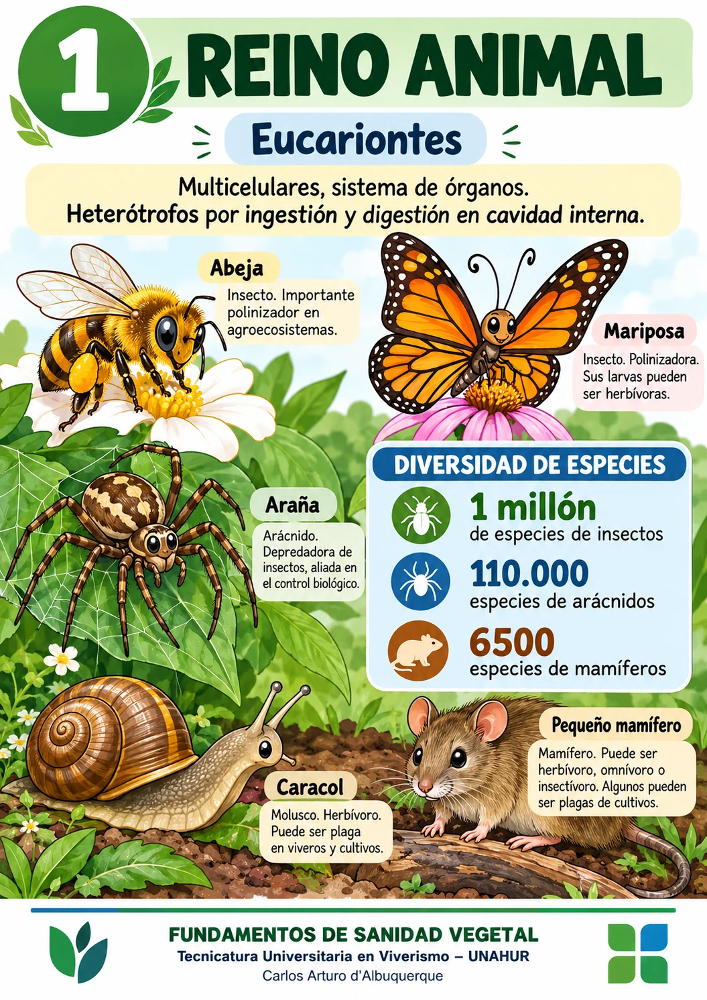

UNAHUR · VIVERISMO · GUÍA DE ESTUDIO 09
Observar, reconocer y cuidar el agroecosistemaREINO ANIMALZOOLOGIA 1.
Explorá los animales del agroecosistema: su clasificación, sus funciones y su relación con la sanidad vegetal. Veinte temas para estudiar juntos.

ANTES DE EMPEZAR
Reconocer el animal. Entender su función.
Un organismo puede ser herbívoro, depredador, polinizador o participar en la descomposición. Clasificarlo y comprender su papel ayuda a interpretar lo que ocurre en el cultivo.
El recorrido conserva exactamente el orden 1–20 del índice. Cada ficha abre su lámina original completa. Las precisiones científicas se presentan en el texto sin alterar las imágenes.
01 / TU RECORRIDO DE ESTUDIO
Del 01 al 20, como en el índice.
Elegí una ficha o avanzá paso a paso. Podés marcar las que ya repasaste.
02 / ENCONTRÁ LAS DIFERENCIAS
Una mirada, muchas pistas.
Buscá conceptos, especies y temas sin perder el orden del índice.
| Tema del índice | Idea o ejemplo | Para recordar | Grupo | Descripción |
|---|
Compará grupos, funciones y conceptos siguiendo los veinte temas del índice.
EXPLORADOR DE CARACTERÍSTICAS
¿Qué pistas distinguen a cada grupo?
Elegí un grupo y compará sus rasgos antes de pasar a las preguntas.
03 / HACÉ MEMORIA
Leé la pregunta.
Recordá la idea.
Una tarjeta por tema, en el orden del índice. Intentá responder antes de darla vuelta.
04 / DESAFÍO DEL JARDÍN
Treinta preguntas para conectar ideas.
Veinte preguntas siguen los temas del índice y diez integran los conceptos. Aprendé con cada explicación.
TU MATERIAL DE CONSULTA
Veintiuna láminas para explorar.
Índice y veinte láminas originales en orden. Tocá para ampliar y leer cada imagen completa.
PRECISIONES PARA ESTUDIAR
Conservamos las imágenes y aclaramos los conceptos.
- Nemátodos: distinguir el modelo del conjunto. El ciclo de invasión por J2 corresponde al ejemplo agallador. No todos los nemátodos son fitoparásitos y los síntomas aéreos no bastan para confirmar su presencia. Lavar raíces permite inspeccionarlas, pero no garantiza sanear tejidos infestados. UC IPM: nemátodos.
- Metaldehído: corregimos la afirmación de inocuidad. La lámina 13 indica que no afecta a aves; puede ser tóxico para aves y perros. No se adopta como recomendación ni se reproducen las recetas caseras como tratamientos garantizados. UC IPM: caracoles y babosas.
- Eriofidos: excepción al número de patas. Poseen dos pares de patas, por lo que no se aplica a ellos la regla general de ocho patas. Eriophyoidea ID: morfología.
- Grupos y funciones no son equivalentes. Hay artrópodos benéficos y perjudiciales. La cochinilla de humedad es un crustáceo isópodo; los ácaros son arácnidos. No todos los animales poseen sistemas de órganos o cavidad digestiva.
- Las láminas de manejo son material de estudio. Los efectos, usos y riesgos no se deducen de «fumigante» o «no fumigante». Para una aplicación concreta deben verificarse producto, registro y etiqueta; no se incluyen dosis ni recomendaciones de uso en esta guía.
Material ilustrado: Carlos Arturo d’Albuquerque · Fundamentos de Sanidad Vegetal · UNAHUR. Índice y veinte láminas originales.